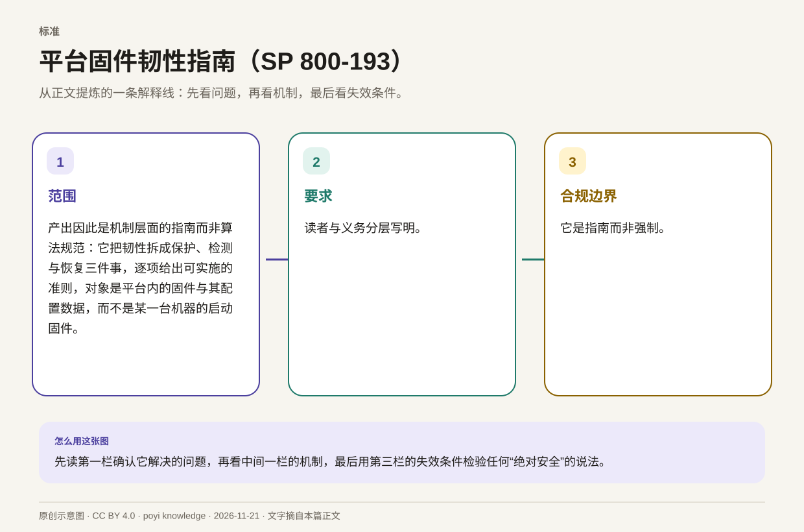
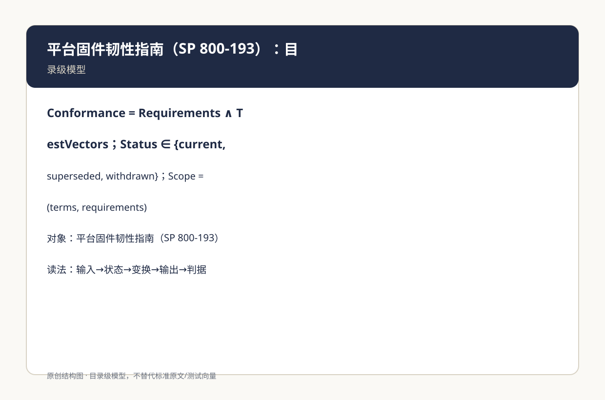

原理与机制
标准：平台固件韧性指南（SP 800-193）（Platform Firmware Resiliency Guidelines (SP 800-193)）。摘要自述对象与性质：「This document provides technical guidelines and recommendations supporting resiliency of platform firmware and data against potentially destructive attacks.」并定义平台：「The platform is a collection of fundamental hardware and firmware components needed to boot and operate a system.」三原则在摘要中一句写尽：「The technical guidelines in this document promote resiliency in the platform by describing security mechanisms for protecting the platform against unauthorized changes, detecting unauthorized changes that occur, and recovering from attacks rapidly and securely.」执行摘要同句复述：「These guidelines are based on the following three principles:」并列出「Protection: Mechanisms for ensuring that Platform Firmware code and critical data remain in a state of integrity and are protected from corruption」。产出因此是机制层面的指南而非算法规范：它把韧性拆成保护、检测与恢复三件事，逐项给出可实施的准则，对象是平台内的固件与其配置数据，而不是某一台机器的启动固件。

为什么重要
风险写在摘要：「A successful attack on platform firmware could render a system inoperable, perhaps permanently, or requiring reprogramming by the original manufacturer, resulting in significant disruptions to users.」执行摘要说明为何难修：「Much of this firmware is highly privileged in the system architectures, and because this firmware is necessary for the system to operate, repairing this firmware can be challenging.」要补的缺口是既有指南只覆盖一类固件：「Earlier NIST publications have addressed the threat of attacks on one particular type of platform firmware: boot firmware, commonly known as the Basic Input/Output System (BIOS).」紧接着补上范围：「However, the platform consists of many other devices with firmware and configuration data.」四段合起来给出缺口的形状：损失未必是数据泄露，而是可用性被长期摧毁，修复又依赖原厂手段；此前的指南只覆盖一类固件，其余带固件与配置数据的器件未被同等对待。
应用与实例
该条目用于应用安全工程中的对象定位与步骤复述；引用时先确认输入、参数与版本，再判断结论是否仍适用。

边界与攻击面
它是指南而非强制。Authority 段自陈不改变既有权威：「Nor should these guidelines be interpreted as altering or superseding the existing authorities of the Secretary of Commerce, Director of the OMB, or any other federal official.」并写明联邦体系外的用法：「This publication may be used by nongovernmental organizations on a voluntary basis and is not subject to copyright in the United States.」§1.3 收窄威胁面：「The goal of this document is to provide principles and guidelines that can support platform resiliency primarily against remote attacks.」§1.4 记下一部分只是背景材料：「Section 2 provides informative material describing platform components and architectures.」Audience 段限定读者门槛：「The technical guidelines assume readers have expertise in the platform architectures and are targeted primarily at developers and engineers responsible for implementing firmware-level security technologies in systems and devices.」几处限制叠在一起：指南本身不新增强制力，威胁面以远程攻击为主，第 2 章自陈只是背景材料，且文本假定读者已具备平台架构方面的专业知识。
历史与背景
扉页首行是「NIST Special Publication 800-193」，作者与部门所在行连读为「Andrew Regenscheid Computer Security Division Information Technology Laboratory」，免费获取行写「This publication is available free of charge from:」，DOI 10.6028/NIST.SP.800-193。Authority 段的引用行给出日期与页数：「Natl.Inst.Stand.Technol.Spec.Publ.800-193, 45 pages (May 2018)」，即 2018 年 5 月版；本文件未在门面板块声明取代任何出版物。致谢页把作者与评审者写在一起：「The author, Andrew Regenscheid of the National Institute of Standards and Technology (NIST), wishes to thank his colleagues who reviewed drafts of this document and contributed to its technical content.」并列出业界与政府专家：「These experts included Chirag Schroff from Cisco; Mukund Khatri from Dell;」。
逐步示例与核验
形式模型与复算步骤
[S=\min_i S_i,\quad S_i\in{\text{密钥强度},\text{分组安全},\text{实现安全}}]
平台固件韧性指南（SP 800-193）的公开参数、密钥/随机数与消息；变量说明：S 为综合安全强度；各分量取最小值，不能只看密钥位数。1.读取标准规定的密钥/分组/模式参数。2.按标准表换算等效强度。3.取最弱分量作为系统强度。边界：公式只覆盖已登记的参数与假设；参数取值、标准版本和实现细节仍以来源为准。
参考出处
- Wikipedia search entry for 平台固件韧性指南（SP 800-193）. https://zh.wikipedia.org/w/index.php?search=%E5%B9%B3%E5%8F%B0%E5%9B%BA%E4%BB%B6%E9%9F%A7%E6%80%A7%E6%8C%87%E5%8D%97%EF%BC%88SP%20800-193%EF%BC%89
- Handbook of Applied Cryptography (Menezes, van Oorschot, Vanstone). https://www.cacr.math.uwaterloo.ca/hac/